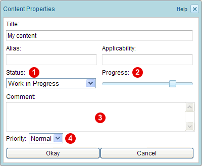
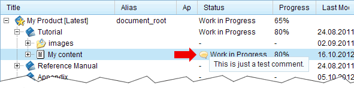
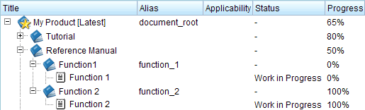

Chapter 1.5. Tracking the completion status
Four node-properties exist which allow users to track whether the editing is already finished or there is still some work to do. The status property  , defines a workflow status. The progress property
, defines a workflow status. The progress property  indicates an estimation of the completion in percentage. The comment property
indicates an estimation of the completion in percentage. The comment property  allows a user to attach an arbitrary text to the node, e.g. a description what has to be done. The priority property can be used in combination with the comment property, to indicate the importance of the comment.
allows a user to attach an arbitrary text to the node, e.g. a description what has to be done. The priority property can be used in combination with the comment property, to indicate the importance of the comment.

Figure 1.5.1. Node properties for tracking the completion status
The status property can be set to any of the following values:
- Work in Progress:
This is the initial status of a newly created content-node. As long as the status is WiP, the content can be edited by users who have authoring rights. - Ready for Approval:
A user with authoring rights can set the status to "Ready for Approval" to indicate that he has completed his work on this node. In state "Ready for Approval" the content-node is not editable. - Approved:
A user with "Approve content" rights can set the status of a node to "Approved". In state "Approved" the content-node is not editable.
The progress value can be used to indicate how much of the work has already been done (in percentage). Normally, the progress value should be at 100% before the status is set to "Ready for Approval" or "Approved" (but the system does not force users to do so).
If a comment is assigned to a node, then this is indicated in the product-tree by a speech-bubble in the status column:

Figure 1.5.2. Indication of comments in the product-tree
The color of the speech bubble indicates the priority of the comment. For example, a comment with high priority is indicated by a red speech-bubble, whereas a comment with normal priority is indicated by a yellow speech-bubble. Furthermore, when you move the mouse over the status field, then the assigned comment is shown as pop-up text.
Note: Translation of Nodes
Be aware that the translation of a node has its own status-, progress-, comment- and priority-value. For example, the translated node can still have the workflow status "Work in Progress", whereas the original node has already status "Approved".
When a content-node is edited and the progress-value of its translation was already set to 100%, then the progress-value of the translation is reduced to 90%, to indicate that the content of the translated node is no longer up to date.
Completion status of sections
The status- and progress-value of a section-node is automatically calculated from the status- and progress-values of the contained sub-nodes according to the following rules:
- A section has status "Work in Progress" if it contains at least one sub-node with status "Work in Progress". A section has status "Ready for Approval" if it contains at least one sub-node with status "Ready for Approval", but none with status "Work in Progress". A section has status "Approved" if it only contains sub-nodes with status "Approved".
- The progress-value of a section-node is the average of the progress-values of all sub-nodes.
Example:
In the following example, the section "Reference Manual" has the status "Work in Progress", because the content-node with title "Function 1" has still status "Work in Progress". The progress-value of the "Reference Manual" section is "50%", because the the sub-section "Function 1" is still at 0%, and the sub-section "Function 2" is already at 100%, i.e. the average progress is 50%.

Figure 1.5.3. Example: completion status of nodes